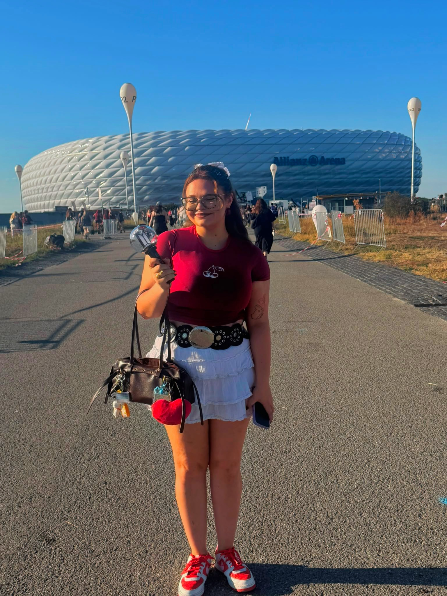

Hello! My name is Julia Sciberras McCormick. I am 25 and from Malta and I'm also half Irish. I am currently a student in the Book and Digital Media Studies MA programme at Leiden University. I previously completed a BA in English Language and Culture at the University of Amsterdam .
I also received my International Baccalaureate Diploma in Wales from UWC Atlantic College .Fun Fact, we broke the Guiness world record for most nationalities in a group hug, totalling to 72 nationalities.I have a particular interest in literature and I am interested in learning more about how books are created, produced, and distributed in the digital age with the hopes of someday becoming a published author and having my own publishing company.
I love books and movies so here are some of my favourites
| Prior Knowledge | I am proficient in Microsoft applications such as Excel and have experience working with digital documents and online tools, specifically multiple payroll systems. |
| Expectations | I hope to learn more about the book publishing process and to understand how books are produced and managed in both traditional and digital environments. I also hope to develop practical digital skills that I can use in my studies and for my future. |